지적기사 (2013-03-10 기출문제)
1과목: 지적측량
1. 각의 측량에 있어 A는 1회 관측으로 60° 20‘ 38’, B는 4회 관측으로 60° 20‘ 21“, C는 9회 관측으로 60° 20’ 30”의 측정결과를 얻었을 때 최확값으로 옳은 것은? (단, 경중률이 일정한 경우이다.)
- 60° 21‘ 20“
- 60° 20‘ 24“
- 60° 20‘ 28“
- 60° 20‘ 32“
(정답률: 85%)

2. 축척 1/1000인 지역을 평판측량방법으로 측량할 경우 도상에 영향을 미치지 않는 지상거리의 허용범위는?
- 10cm
- 12cm
- 15cm
- 30cm
(정답률: 53%)
3. 두 점의 좌표가 각각 A(495674.32, 192899.25), B(497845.81, 190256.39)일 때, A→B의 방위는?
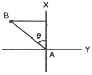
- N 50° 35' 31"W
- S 50° 35' 31"'E
- N 39° 24' 29"W
- S 39° 24' 29"E
(정답률: 58%)
4. 경위의측량방법에 따라 교회법으로 지적삼각보조점측량을 하는 기준으로 틀린 것은?
- 관측은 20초독 이상의 경위의를 사용한다.
- 수평각 관측은 2대회의 방향관측법에 따른다.
- 2개의 삼각형으로부터 계산한 위치의 연결교차가 0.50m 이하일 때에는 그 평균치를 지적삼각보조점의 위치로 한다.
- 삼각형의 각 내각은 30° 이상 120° 이하로 한다.
(정답률: 53%)
5. 다각망도선법에 따른 지적도근점측량에 대한 설명이 옳은 것은?
- 각 도선의 교점은 지적도근점의 번호 앞에 “교점”자를 붙인다.
- 3점 이상의 기지점을 포함한 결합다각방식에 따른다.
- 영구표지를 설치하지 않는 경우, 지적도근점의 번호는 시ㆍ군ㆍ구별로 부여한다.
- 1도선의 점의 수는 40개 이하로 한다.
(정답률: 74%)
6. 경위의측량방법으로 세부측량을 실시할 때 측량대상 토지의 경계점 간 실측거리와 경계점의 좌표에 따라 계산한 거리의 교차는 얼마 이내이어야 하는가? (단. L은 실측거리로서 미터단위로 표시한 수치이다.)
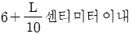
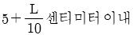
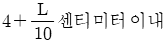
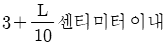
(정답률: 87%)
7. 1910년대에 시행한 특별 소삼각 측량지역에 해당하지 않는 것은?
- 신의주
- 평양
- 함흥
- 개성
(정답률: 60%)
8. 평판측량방법에 따른 세부측량에서 기지점을 기준으로 하여 지상경계선과 도상경계선의 부합여부를 확인하는 방법 기준이 아닌 것은?
- 지상원호교회법
- 거리비교확인법
- 도상원호교회법
- 원호대치비교법
(정답률: 65%)
9. 지적삼각점측량의 방법 기준으로 옳지 않은 것은?
- 지적삼각점표지의 점간거리는 평균 2km이상 5km이하로 한다.
- 삼각망의 각 내각은 30° 이상 120°이하로 한다. 다만, 망평균계산법과 삼변측량에 따르는 경우에는 그러하지 아니하다.
- 미리 지적삼각점 표지를 설치하여야 한다.
- 지적사각형의 명칭은 측량 지역이 소재하고 있는 시ㆍ군의 명칭 중 한 글자를 선택하고, 시ㆍ군 단위로 일련번호를 붙여서 정한다.
(정답률: 64%)
10. 다각망선도법에 따라 지적도근점측량을 실시하는 경우 지적도근점표지의 점간거리는 평균 얼마 이하로 하여야 하는가?
- 50m 이하
- 200m 이하
- 300m 이하
- 500m 이하
(정답률: 71%)
11. 지적측량에 대한 설명으로 옳은 것은?
- 일반적으로 공사를 하기 위한 측량이다.
- 영속적인 법적 효력을 갖는 측량이다.
- 측량의 완료와 함께 측량성과는 불필요한 측량이다.
- 측량학의 일반원칙에 의하여 개인이 실시하는 측량이다.
(정답률: 74%)
12. 경위의측량방법으로 세부측량을 하였을 때 측량결과도에 작성하여야 할 사항이 아닌 것은?
- 측량기하적 및 도상에서 측정한 거리
- 측량대상 토지의 경계점 간 실측거리
- 측량대상 토지의 점유현황선
- 측량결과도의 제명 및 번호
(정답률: 48%)
13. O점에 기계를 세워 A점과 B점을 관측하려 하였으나 A점이 장애물로 인해 보이지 않아 AA'만큼 편심 관측한 결과 ∠A' OB=13° 12' 26.7"이었다면 ∠AOB는 얼마인가? (단,
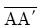
=2.34m이고 삼각점 간의 거리는 1234.56m이다.)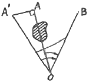
- 13° 02‘ 26.7“
- 13° 08‘ 57.7“
- 13° ⑤‘ 55.7“
- 13° 10‘ 57.7“
(정답률: 35%)
14. 실선과 허선을 각각 3mm로 연결하고 허선에 0.3mm의 점 2개를 제도하는 행정구역선은?
- 국계
- 시ㆍ도계
- 시ㆍ군계
- 동ㆍ리계
(정답률: 54%)
15. 평판측량방법으로 세부측량을 할 때에 지적도, 임야도에 따라 작성하는 측량준비 파일에 포함시켜야 할 사항이 아닌 것은?
- 측량대상 토지의 경계선ㆍ지번 및 지목
- 인근 토지의 경계선ㆍ지번 및 지목
- 지적기준점 간의 방위각 및 경계점간 계산거리
- 지적기준점 간의 거리, 지적기준점의 좌표
(정답률: 46%)
16. 삼각측량에 의해 계산된 측지방위각과 천문측량에 의해 측정된 값을 비교하여 그 차이를 조정함으로써 보다 정확한 위치를 결정하기 위해 이용하는 관계식은?
- 르장드로(Legendre)정리
- 라플라스(Laplace)정리
- 가우스(Gauss)정리
- 리먼(Lehman)정리
(정답률: 68%)
17. 평판측량방법에 따른 세부측량을 방사법으로 하는 경우 1방향선의 도상길이는 최대 얼마 이하로하여야 하는가? (단, 광파조준의 또는 광파측거기를 사용하는 경우는 고려하지 않는다.)
- 5cm
- 10cm
- 20cm
- 30cm
(정답률: 50%)
18. 경계점좌표등록부 시행지역에서 경계점의 측량성과와 검사성과의 연결교차 허용범위 기준이 옳은 것은?
- 0.10m 이내
- 0.15m 이내
- 0.20m 이내
- 0.25m 이내
(정답률: 70%)
19. 지적삼각보조점의 망 구성으로 옳은 것은?
- 유심다각망 또는 삽입망
- 삽입망 또는 사각망
- 사각망 또는 교회망
- 교회망 또는 교점다각망
(정답률: 74%)
20. 경위의측량방법에 따른 세부측량의 관측 및 계산에서, 수평각의 측각공차 중 1회 측정각과 2회 측정각의 평균값에 대한 교차 기준은?
- 30초 이내
- 40초 이내
- 50초 이내
- 60초 이내
(정답률: 70%)
2과목: 응용측량
21. 다음 중 우리나라에서 발사한 위성은?
- KOMPSAT
- LANDSAT
- SPOT
- IKONOS
(정답률: 67%)
22. 그림과 같은 노선 횡단면의 면적은?
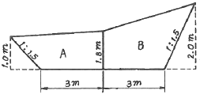
- 15.95m2
- 14.95m2
- 13.95m2
- 12.95m2
(정답률: 48%)
23. 사진에서 볼 때 태양광선을 받아 주위보다 밝게 찍혀 보이는 부분을 무엇이라 하는가?
- Sun spot
- Lineament
- Overlay
- Shadow pot
(정답률: 83%)
24. 평판을 이용하여 측량한 결과가 그림과 같이 n=13, D=75m, S=1.25m, I=1.30m, HA=50.00m일 때 B점의 표고(HB)는?
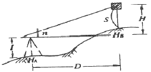
- 58.8m
- 59.8m
- 60.8m
- 61.8m
(정답률: 69%)
25. 노선측량의 직업 단계를 A-E와 같이 나눌 때, 일반적인 작업순서로 옳은 것은?
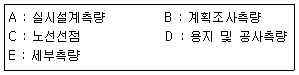
- A-C-D-E-B
- A-C-B-D-E
- C-A-D-B-E
- C-B-A-E-D
(정답률: 69%)
26. 노선의 중심점간 길이가 20m이고 단곡선의 반지름 R=100m일 때 1체인(20m)에 대한 편각은?
- 5‘ 40“
- 5° 20“
- 5° 44“
- 5° 54“
(정답률: 58%)
27. 지하시설물측량을 지하시설물의 조사, 관측, 해석 및 유지관리로 구분할 때, 지하시설물 해석의 내용과 거리가 먼 것은?
- 관측을 통하여 수집된 관측 자료를 분석한다.
- 구조화편집을 통하여 최종자료 기반화를 완성한다.
- 지하시설물의 변동사항 갱신과 지하시설물의 특성에 따른 모니터링체계를 통합한다.
- 관측을 통하여 수집된 지하시설물윈도와 대장조서를 이용하여 대장입력과 도면제작편집을 수행한다.
(정답률: 34%)
28. 그림과 같이 A에서부터 관측하여 폐합 수준 측량을 한 결과가 표와 같을 때 오차를 보정한 D점의 표고는?
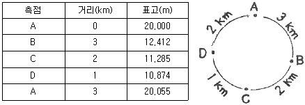
- 10.819m
- 10.833m
- 10.915m
- 10.929m
(정답률: 50%)
29. 반지름이 300m인 단곡선에서 교각 I=87° 24' 50“일 때 곡선장(C.L)은?
- 457.7m
- 300.0m
- 228.8m
- 188.4m
(정답률: 53%)
30. 다음 중 GPS의 구성체계에 포함되지 않는 부문은?
- 우주부문
- 사용자부문
- 제어부문
- 탐사부분
(정답률: 60%)
31. 터널 안에서 A점의 좌표가 (1749.0m, 1134.0m, 126.9m)B점의 좌표가 (2419.0m, 987.0m, 149.4m)일 때 A, B점을 연결하는 터널을 굴진하는 경우 이 터널의 경사거리는?
- 685.94m
- 686.19m
- 686.31m
- 686.57m
(정답률: 48%)
32. 초점거리(f) 21cm인 카메라로 촬영한 공중사진의 종중복도(p) 70%, 60%인 사진 2장과 초점거리 11cm인 카메라로 촬영한 공중사진의 종중복도 75%, 60%인 사진 2장, 총 4장의 사진 중 기선고도비가 가장 큰 것은? (단, 사진크기는 18cm×18cm로 동일하다.)
- f=21cm, p=70%
- f=21cm, p=60%
- f=11cm, p=75%
- f=11cm, p=60%
(정답률: 53%)
33. 편각법으로 원곡선을 설치할 때 기점으로부터 교점까지의 거리=123.45m, 교각(I)=40°20', 곡선반지름(R)=100m 일 때 시단현의 길이는? (단, 중심말뚝의 간격은 20m이다.)
- 4.18m
- 6.72m
- 14.18m
- 13.28m
(정답률: 40%)
34. 초점거리 210mm, 사진크기 18cm×18cm인 카메라로 평지를 촬영한 항공사진 입체모델의 주점기선장이 60mm라면 종중복도는?
- 56%
- 61%
- 67%
- 72%
(정답률: 48%)
35. 터널측량에 대한 설명 중 옳지 않은 것은?
- 터널측량은 크게 터널내측량, 터널외측량, 터널내외연결특량으로 나누어진다.
- 터널측량에서는 망원경의 십자선 및 표척에 조명이 필요하다.
- 터널의 길이방량은 주로 트래버스측량으로 행한다.
- 터널내의 곡선설치는 일반적으로 지상에서와 같이 편각법을 주로 사용한다.
(정답률: 75%)
36. 사진의 주점을 맞추고, 지구의 곡률 등을 보정하는 표정은?
- 접합표정
- 내부표정
- 대지표정
- 상호표정
(정답률: 56%)
37. 등고선 측정방법 중 지성선 상의 중요점의 위치와 표고를 측정하여, 이 점들을 기준으로 하여 등고선을 삽입하는 등고선 측정 방법은?
- 사각형 분할법(좌표점법)
- 기준점법(종단점법)
- 횡단점법
- 직접법
(정답률: 54%)
38. 수준측량시 중간시가 많을 경우에 가장 편리한 야장기입법은?
- 기고식
- 고차식
- 승강식
- 교차식
(정답률: 73%)
39. 항공사진측량을 할 때 현지조사 및 현장보완측량에 대한 설명으로 옳은 것은?
- 현지리지조사를 나갈 때에는 촬영사진을 1:1로 출력하여 사용한다.
- 인공구조물은 모두 조사하되 자연지물은 조사하지 않는다.
- 현장보완측량에는 주로 토털스테이션을 사용한다.
- 가건물과 비닐하우스도 모두 조사하여 표시하는 것을 원칙으로 한다.
(정답률: 62%)
40. 우리나라 지형도 1:50000에서 조곡선의 간격은?
- 2.5m
- 5m
- 10m
- 20m
(정답률: 60%)
3과목: 토지정보체계론
41. PBLIS의 시스템 구성에 해당되지 않는 것은?
- 지적공부관리시스템
- 지적측량성과작성시스템
- 지적행정관리시스템
- 지적측량시스템
(정답률: 63%)
42. 토지기록전산화의 추진을 위한 준비 단계의 내용으로 옳은 것은?
- 지적도, 임야도의 카드화
- 토지소유자 주민등록번호 등재 정리
- 면적을 평간위로 환산 등록
- 조사ㆍ위성측량을 통한 새로운 데이터 취득
(정답률: 38%)
43. 공간데이터의 수집 절차로 옳은 것은?
- 데이터 획득→수집계획→데이터 검증
- 수집계획→데이터 검증→데이터 획득
- 수직계획→데이터 획득→데이터 검증
- 데이터 검증→데이터 획득→수집계획
(정답률: 78%)
44. 벡터데이터의 기본 요소가 아닌 것은?
- 점
- 선
- 행렬
- 면
(정답률: 86%)
45. 래스터 자료의 압축방법에 해당하지 않는 것은?
- 블록 코드(Block code) 기법
- 체인 코드(Chain code) 기법
- 연속분할 코드(Run-length code) 기법
- 포인트 코드(Point code) 기법
(정답률: 91%)
46. 토지정보시스템에 대한 설명이 틀린 것은?
- 토지와 토지 관련 자료를 수집한다.
- 토지의 형태와 특성을 기록한다.
- 토지 정보의 효율적 관리에 이용된다.
- 토지 과세의 의사결정시스템이다.
(정답률: 87%)
47. 데이터베이스관리시스템(DBMS)의 단점이 아닌 것은?
- 초기 구축 비용과 유지 비용이 고가
- 시스템의 자료구조가 복잡
- 통제의 집중화에 따른 위험 존재
- 데이터의 중복성 발생
(정답률: 89%)
48. 지적도의 경계선은 다음 중 어떤 형태의 도형자료로 입력되는가?
- 선 형태
- 점 형태
- 면 형태
- 높이 형태
(정답률: 92%)
49. 지적 관련 전산시스템을 나타내는 용어의 표기가 틀린 것은?
- 토지관리정보체계-KIMS
- 한국토지정보시스템-KLIS
- 필지중심토지정보시스템-PBLIS
- 지리정보시스템-GIS
(정답률: 82%)
50. 행정구역의 명칭이 변경된 때에, 지적소관청은 국토해양부장관에게 행정구역변경일 몇 일 전까지 행정구역의 코드변경을 요청해야 하는가?
- 5일
- 10일
- 20일
- 30일
(정답률: 87%)
51. 객체지향형데이터베이스 관리체계(OODBMS)의 특징으로 옳지 않은 것은?
- 데이터베이스의 관리와 수정이 불편하며 단순한 형태의 데이터만을 저장할 수 있다.
- 관계형 데이터 모델의 단점을 보완할 수 있는 것으로 등장하였다.
- 객체지향프로그래밍 언어를 데이터베이스시스템에 적용시킨 것이다.
- 특정 객체 간에는 데이터와 그 조작 방법을 공유할 수 있다.
(정답률: 70%)
52. 지적부서가 아닌 부서에 대장전산프로그램의 설치를 승인하고자 할 때, 이를 활용할 수 있도록 하는 해당업무가 아닌 것은?
- 소유권변동연혁 조회
- 개별필지과세변동연혁 조회
- 집합건물소유권연혁 조회
- 토지이동연혁 조회
(정답률: 43%)
53. 래스터데이터의 단점으로 볼 수 없는 것은?
- 해상도를 높이면 자료의 양이 크게 늘어난다.
- 자료의 이동, 삭제, 입력 등 편집이 어렵다.
- 위상구조를 부여하지 못하므로 공간적 관계를 다루는 분석이 불가능하다.
- 중첩기능을 수행하기가 불편하다.
(정답률: 80%)
54. 필지식별자(Parcel Identifier)에 대한 설명 중 틀린 것은?
- 각 필지의 등록사항의 저장, 검색, 수정 등을 처리하는데 이용한다.
- 필지별 대장의 등록사항과 도면의 등록사항을 연결시킨다.
- 지적도에 등록된 모든 필지에 부여하여 개별화한다.
- 경우에 따라서 변경이 가능하다.
(정답률: 73%)
55. 메타데이터의 역할을 가장 옳게 설명한 것은?
- 이질적인 자료간의 결합을 촉진한다.
- 데이터의 기본 체계를 유지하여 일관성 있는 데이터를 제공한다.
- 자료에 대한 접근현황을 실시간으로 보여준다.
- 지료의 다양한 공간 분석 기준을 제시해 준다.
(정답률: 80%)
56. 표준 데이터베이스 질의언어인 SQL의 데이터 정의어(DDL)에 해당하지 않는 것은?
- DROP
- ALTER
- CREATE
- INSERT
(정답률: 80%)
57. BPLIS와 NGIS의 연계로 인한 장점으로 가장 거리가 먼 것은?
- 유사한 정보시스템의 개발로 인한 중복 투자 방지
- 토지의 효율적인 이용 증진과 체계적 국토개발
- 토지 관련 자료의 원활한 교류와 공동 활용
- 지적측량과 일반측량의 업무 통합에 따른 효율성 증대
(정답률: 70%)
58. 수작업처리현황의 전산입력이 완료된 때에, 전산처리결과를 출력하여 지적전산자료관리책임관에게 이상유무의 확인을 받는 사항에 해당하지 않는 것은?
- 등본 미발급 및 열람현황
- 토지이동 일일정리현황
- 토지이동 미정리 내역
- 토지이동 정리결과
(정답률: 44%)
59. 스파게티모델의 특징으로 틀린 것은?
- 공간자료를 단순한 좌표목록으로 저장한다.
- 도면을 독취할 때 작성된 자료와 비슷하다.
- 인접한 다각형을 나타낼 때에 경계는 2번씩 저장한다.
- 객체들 간 공간관계가 설정되어 공간분석에 효율적이다.
(정답률: 61%)
60. 토지정보시스템 구성 요소로 거리가 먼 것은?
- 하드웨어
- 기후자원
- 인적자원
- 소프트웨어
(정답률: 78%)
4과목: 지적학
61. 관계에 대한 설명이 옳은 것은?
- 민유지만 조사하여 관계를 발급하였다.
- 발급대상은 산천, 전답, 천택(川澤), 가사(家舍) 등 모든 부동산이었다.
- 외국인에게도 토지소유권을 인정하였다.
- 관계 발급의 신청은 소유자의 의무사항은 아니다.
(정답률: 55%)
62. 지적과 등기에 관한 설명이 틀린 것은?
- 지적공부는 필지별 토지의 특성을 기록한 공적 장부다.
- 등기부의 표제부는 지적공부의 기록을 토대로 작성된다.
- 등기부 갑구의 정보는 지적공부 작성의 토대가 된다.
- 등기부 을구의 내용은 지적공부 작성의 토대가 된다.
(정답률: 75%)
63. 토지등록에 대한 설명으로 가장 거리가 먼 것은?
- 토지 거래를 안전하고 신속하게 해 준다.
- 지적소관청이 토지등록사항을 공적장부에 기록 공시하는 행정행위이다.
- 국가가 공적장부에 기록된 토지의 이동 및 수정사항을 규제하는 법률적 행위이다.
- 토지의 공개념을 실현하는데에 활용될 수 있다.
(정답률: 38%)
64. 대한제국 시대에 양전사업을 전담하기 위해 설치한 최초의 독립 기관은?
- 탁지부
- 임시토지조사국
- 양자아문
- 지계아문
(정답률: 63%)
65. 왕이나 왕족의 사냥터 보호, 군사훈련지역 등 일정한 지역을 보호할 목적으로 자연암석ㆍ나무ㆍ비석 등에 경계를 표시하여 세운 것은?
- 금표(禁標)
- 장생표(長栍標)
- 사표(四標)
- 이정표(里程標)
(정답률: 43%)
66. 토지조사사업에 따른 지적제도의 확립에 대한 설명이 틀린 것은?
- 토지의 일필지에 대한 위치 및 형상과 경계를 측정하여 지적도에 등록하였다.
- 토지의 경계와 소유권은 고등토지조사위원회에서 사정하였다.
- 측량성과에 의거 토지의 소재, 지번, 지목, 소유권 등을 조사하여 토지대장에 등록하였다.
- 사정은 강력한 행정처분을 확정하는 원시취득의 효력이 있었다.
(정답률: 58%)
67. 각 도에 지정측량사를 두어 광대지 측량 업무를 대행함으로써 사실상의 지적측량 일부 대행제도가 시작된 시기는?
- 1910년
- 1918년
- 1923년
- 1938년
(정답률: 50%)
68. 우리나라 지적 관련 법령의 변천 과정을 옳게 나열한 것은?
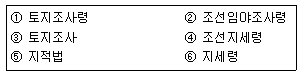
- ④→②→①→③→⑥→⑤
- ③→⑥→①→④→②→⑤
- ④→②→⑥→③→①→⑤
- ③→①→⑥→②→④→⑤
(정답률: 78%)
69. 현대지적의 원리 중 지적행정을 수행함에 있어 국민의사의 우월적 가치가 인정되며, 구김ㄴ에 대한 충실한 봉사, 국민에 대한 행정책임 등의 확보를 목적으로 하는 것은?
- 민주성의 원리
- 공기능성의 원리
- 정확성의 원리
- 능률성의 원리
(정답률: 64%)
70. 다음 중 지적제도와 등기제도를 처음부터 일원화하여 운영한 국가는?
- 독일
- 네덜란드
- 일본
- 대만
(정답률: 60%)
71. 자한도(字限圖)에 대한 설명으로 옳은 것은?
- 고려시대에 작성된 지적도이다.
- 대만의 구지적도이다.
- 조선시대에 작성된 지적도이다.
- 일본의 구지적도이다.
(정답률: 79%)
72. 다음 중 일반적인 지목의 설정원칙에 해당하지 않는 것은?
- .일시변경불변의 원칙
- 지목변경불변의 원칙
- 사용목적추종의 원칙
- 주지목추종의 원칙
(정답률: 65%)
73. 구한국 정부에서 문란한 토지제도를 바로잡기 위하여 시행하였던 근대적 공시제도의 과도기적 제도는?
- 입안제도
- 양안제도
- 지권제도
- 등기제도
(정답률: 46%)
74. 조선시대의 文記에 관한 설명이 틀린 것은?
- 오늘날의 부동산 매매계약서와 같은 것이다.
- 당사자, 증인, 그리고 집필인이 작성하였다.
- 문기는 입안을 청구하는 경우는 물론 소송의 유일한 증거로 제출되었다.
- 상속, 증여, 임대차의 경우는 작성하지 않았다.
(정답률: 65%)
75. 대한제국시대에 삼림법에 의거하여 작성한 민유산야약도에 대한 설명이 틀린 것은?
- 최초로 임야측량이 실시되었다는 점에서 중요한 의미가 있다.
- 민유임야측량은 조직과 계획 없이 개인별로 시행되었고 일정한 수수료도 없었다.
- 토지 등급을 상세하게 정리하여 세금을 공평하게 징수 할 수 있도록 작성된 도면이다.
- 민유산야약도의 경우에는 지번을 기재하지 않았다.
(정답률: 25%)
76. 조선시대의 양전법에서 구분한 직각삼각형 형태의 토지를 무엇이라 하는가?
- 방전
- 제전
- 구고전
- 규전
(정답률: 54%)
77. 매 20년마다 양전을 실시하여 작성토록 경국대전에 나타난 것은?
- 양안(量案)
- 입안(立案)
- 양전대장(量田臺帳)
- 문권(文券)
(정답률: 84%)
78. 지적의 분류 중 등록대상에 의한 분류가 아닌 것은?
- 도해지적
- 2차원지적
- 3차원지적
- 입체지적
(정답률: 65%)
79. 조선시대에 정약용의 양전개정론과 관계가 없는 것은?
- 어린도법
- 경무법
- 망척제
- 방량법
(정답률: 59%)
80. 토지조사사업 당시 별필(別筆)로 하였던 경우가 아닌 것은?
- 분쟁지로서 명확한 경계나 권리 한계가 불분명한 것
- 도로, 하천, 구거 등에 의하여 자연으로 구획된 것
- 전당권 설정의 증명이 있는 경우 그 증명마다 별필로 취급한 것
- 조선총독부가 지정한 개인 소유의 공공 토지
(정답률: 31%)
5과목: 지적관계법규
81. 토지 등기기록의 표제부에 기록하는 사항이 아닌 것은?
- 표시번호
- 소재와 지번
- 등기원인
- 도면의 번호
(정답률: 48%)
82. 축척변경에 따른 청산금의 납부고지 등에 관한 설명으로 옳은 것은?
- 지적소관청은 청산금의 결정을 공고한 날부터 1개월 이내에 토지소유자에게 납부고지를 하여야 한다.
- 청산금의 납부고지를 받은 자는 그 고지를 받은 날부터 3개월 이내에 청산금을 지적소관청에 내야 한다.
- 지적소관청은 청산금의 수령통지를 한 날부터 3개월 이내에 청산금을 지급하여야 한다.
- 지적소관청은 청산금의 결정을 공고한 날부터 1개월 이내에 청산금의 수령통지를 하여야 한다.
(정답률: 32%)
83. 특별시ㆍ광역시ㆍ특별자치시ㆍ특별자치도ㆍ시 또는 군의 개발ㆍ정비 및 보전을 위하여 수립하는 “도시ㆍ군관리계획”에 포함되지 않는 것은?
- 도시개발사업이나 정비사업에 관한 계획
- 기반시설의 설치ㆍ정비 또는 개량에 관한 계획
- 기본적인 공간구조와 장기적인 발전 방향에 관한 계획
- 용도지역ㆍ용도지구의지정 또는 변경에 관한 계획
(정답률: 64%)
84. 경계점좌표등록부의 등록사항이 아닌 것은?
- 토지의 고유번호
- 지적도면의 번호
- 부호 및 부호도
- 도면별 경계점좌표등록부의 장번호
(정답률: 24%)
85. 축척변경 시행지역의 토지소유자가 5명 이하인 경우, 토지 소유자 중 위원으로 위촉하여야 하는 기준은?
- 토지소유자 전원
- 0명
- 토지소유자 대표 1명
- 무작위 선정
(정답률: 69%)
86. 지적측량수행자가 지적측량의뢰를 받은 경우 지적측량 수행계획서에 기재하는 사항이 아닌 것은?
- 측량일자
- 측량수수료
- 측량방법
- 측량기간
(정답률: 34%)
87. 지적공부의 등록사항에 대한 정정을 신청할 때, 경계 또는 면적의 변경을 가져오는 경우 지적소관청에 제출하여야 할 서류는?
- 등록사항 정정 측량 성과도
- 확정판결서 사본
- 이해관계인 2인 이상의 신청서
- 신청당시의 부동산등기부등본
(정답률: 57%)
88. 지적서고의 연중평균습도 기준이 옳은 것은?
- 20±5퍼센트
- 30±5퍼센트
- 50±5퍼센트
- 65±5퍼센트
(정답률: 69%)
89. 국토의 계획 및 이용에 관한 법률상 도시ㆍ군관리계획의 결정은 언제를 기준으로 그 효력이 발생하는가?
- 도시ㆍ군관리계획의 결정을 고시한 날부터
- 도시ㆍ군관리계획의 결정고시가 된 날의 다음 날
- 도시ㆍ군관리계획의 결정고시가 된 날부터 3일 후
- 도시ㆍ군관리계획의 결정고시가 된 날부터 5일 후
(정답률: 30%)
90. 다음 중 부동산등기법상 미등기의 토지에 관한 소유권 보존등기를 신청할 수 없는 자는?
- 토지대장에 최초의 소유자로 등록되어 있는 자
- 수용으로 인하여 소유권을 취득하였음을 증명하는 자
- 확정판결에 의하여 자기의 소유권을 증명하는 자
- 구청장 또는 면장의 서면에 의하여 자기의 소유권을 증명하는 자
(정답률: 62%)
91. 국토의 계획 및 이용에 관한 법률에 따른 국토의 용도지역 구분에 해당하지 않는 것은?
- 자연환경보전지역
- 준도시지역
- 농림지역
- 관리지역
(정답률: 59%)
92. 다음 중 지적측량업 등록의 결격 사유에 해당하지 않는 것은?
- 금치산자 또는 한정치산자
- 국가보안법 또는 형법의 관련 규정을 위반하여 금고이상의 실형을 선고받고 그 집행이 끝나거나 집행이 면제된 날부터 2년이 지나지 아니한 자
- 측량업의 등록이 취소된 후 2년이 지나지 아니한 자
- 파산자로서 복권되지 아니한 자
(정답률: 48%)
93. 지적소관청이 관리하는 지적기준점표지가 멸실되거나 훼손되었을 때에는 누가 이를 설치하거나 보수하여야 하는가?
- 국토지리정보원장
- 지적소관청
- 시ㆍ도지사
- 국토해양부장관
(정답률: 62%)
94. 국토의 계획 및 이용에 관한 법령에 따라, 지적이 표시된 지형도에 도시ㆍ군관리계획사항을 명시한 도면을 작성하는 축척 기준으로 옳은 것은? (단, 녹지지역의 경우는 고려하지 않는다.)
- 1/500 내지 1/1500
- 1/1000 내지 1/5000
- 1/5000 내지 1/10000
- 1/25000 내지 1/50000
(정답률: 30%)
95. 거짓으로 분할 신청을 한 경우 벌칙 기준이 옳은 것은?
- 300만원 이하의 과태료
- 1년 이하의 징역 또는 1000만원 이하의 벌금
- 2년 이하의 징역 또는 2000만원 이하의 벌금
- 3년 이하의 징역 또는 3000만원 이하의 벌금
(정답률: 57%)
96. 지적전산자료를 이용하거나 활용하려는 자로부터 심사신청을 받은 관계 중앙행정기관의 장이 심사하여야 할 사항에 해당되지 않는 것은?
- 신청인의 지적전산자료 활용 능력
- 신청 내용의 타당성 적합성 및 공익성
- 개인의 사생활 침해 여부
- 자료의 목적 외 사용 방지 및 안전관리대책
(정답률: 60%)
97. 지적소관청이 토지의 표시 변경에 관한 등기를 촉탁하는 사유가 아닌 것은?
- 축척변경
- 신규등록
- 등록사항의 정정
- 지번변경
(정답률: 84%)
98. 다음 설명 중 틀린 것은?
- 국토해양부장관은 모든 토지에 대하여 필지별로 소재ㆍ지번ㆍ지목ㆍ면적ㆍ경계 또는 좌표 드응ㄹ 조사ㆍ측량하여 지적공부에 등록하여야 한다.
- 지적공부에 등록하는 지번ㆍ지목ㆍ면적ㆍ경계 또는 좌표는 토지의 이동이 있을 때 토지소유자(법인이 아닌 사단이나 재단의 경우에는 그 대표자나 관리인)의 신청을 받아 지적소관청이 결정한다.
- 토지의 소재와 지번은 토지대장과 임야대장에 공통적으로 등록되는 사항이다.
- 지적소관청은 지적공부에 등록된 지번을 변경할 필요가 있다고 인정하면 국토해양부장관의 승인을 받아 지번부여지역의 전부 또는 일부에 대하여 지번을 새로 부여할 수 있다.
(정답률: 42%)
99. 지적측량업자의 업무 범위에 해당하지 않는 것은?
- 지적측량성과검사측량
- 지적재조사에 관한 특별법에 따른 지적재조사사업에 따라 실시하는 지적확정측량
- 도시개발사업 등이 띁남에 따라 하는 지적확정측량
- 경계점좌표등록부가 있는 지역에서의 지적측량
(정답률: 67%)
100. 등록사항의 정정에 관한 설명으로 틀린 것은?
- 토지소유자에 관한 사항을 정정하는 경우에는 주민등록등본ㆍ초본 및 가족관계 기록사항에 관한 증명서에 따라 정정하여야 한다.
- 미등기 토지에 대하여 토지소유자의 성명 또는 명칭, 주민등록번호, 주소 등이 명백히 잘못된 겨우에는 가족관계기록사항에 관한 증명서에에 따라 정정하여야 한다.
- 토지소유자는 지적공부의 등록사항에 잘못이 있음을 발견하면 지적소관청에 그 정정을 신청할 수 있다.
- 지적공부의 등록사항 중 경계나 면적 등 측량을 수반하는 초지의 표시가 잘못된 경우에는 지적소관청은 그 정정이 완료될 때까지 지적측량을 정지시킬 수 있다.
(정답률: 31%)
(60° 20‘ 38’ + 60° 20‘ 21“ + 60° 20’ 30”) ÷ (1 + 4 + 9) = 60° 20‘ 28“
따라서 최확값은 "60° 20‘ 28“"이다.